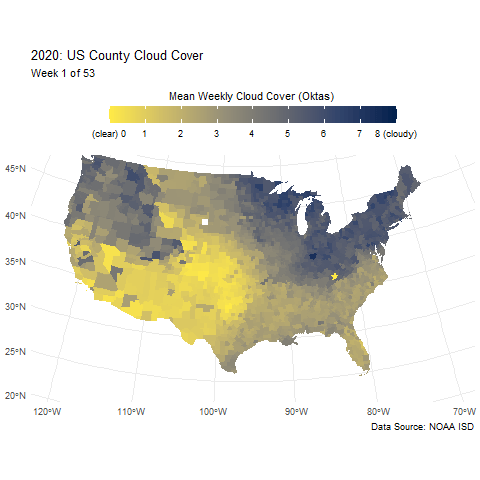
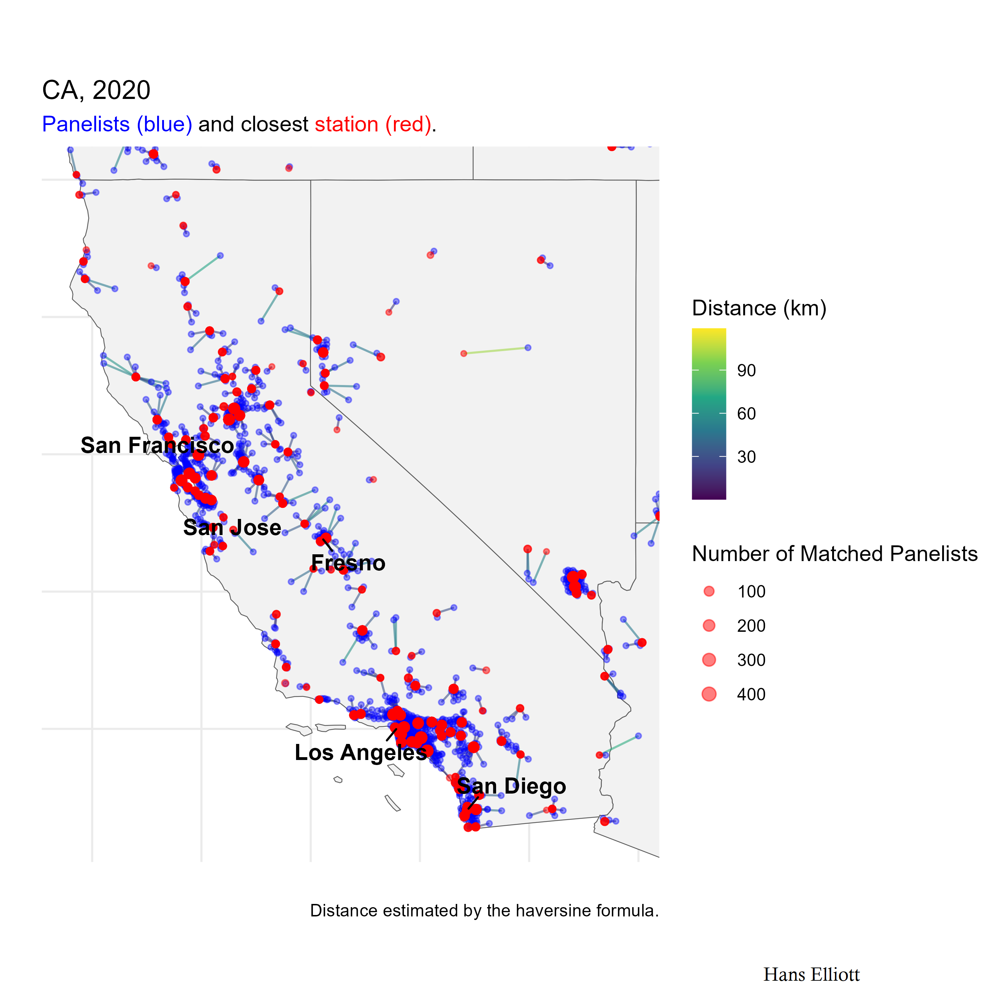

Research Assistant, University of Oregon
I was a research assistant at the University of Oregon advised by Dr. John Chalmers from Oct 2022 to June 2023. I spent most days extracting, cleaning, and analyzing data, and managing the full pipeline on the university's HPC cluster.
One of my favorite projects was collecting weather-station data from the NOAA Integrated Surface Database and matching it to study subjects using a nearest-neighbor search.

